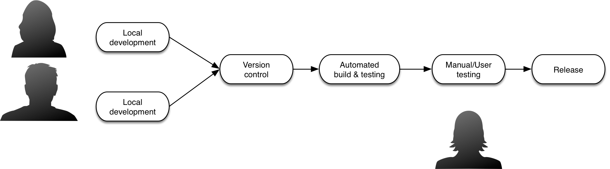
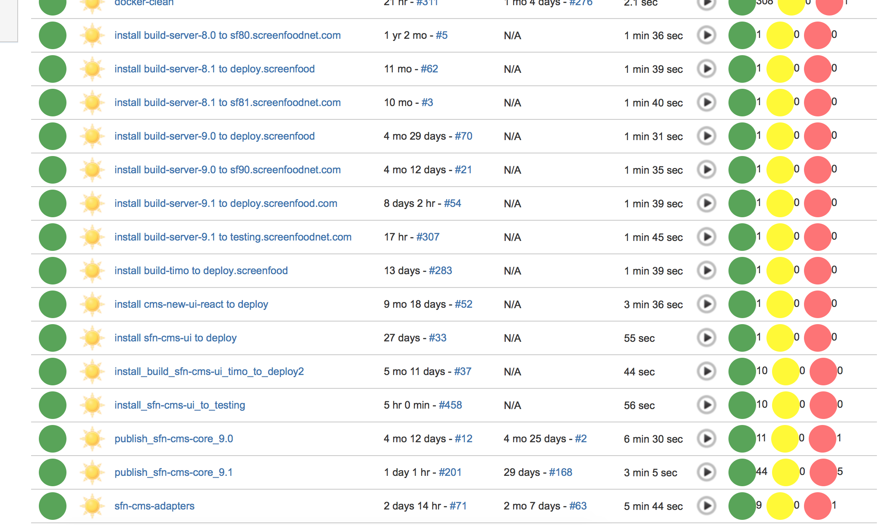

Continuous Delivery
Entregas continuas y sistemas eventualmente exitosos
Por: Juan Timoteo Ponce Ortiz
Anécdota
Servicio X
Empresa X
Inconsistencia entre que el usuario quiere y lo que el programa hace
Lentas actualizaciones del servicio
Necesidad constante de modificar el servicio
Costos elevados de soporte/mantenimiento
Costos elevados de desarrollo/Ingresos reducidos
El servicio X es inestable e inflexible, lo cual genera dificultades para que los clientes sigan usando el servicio y las capacidades del mismo se extiendan para nuevos clientes.
Solución propuesta
Pieter Hintjens
Implementar el método científico como proceso de desarrollo para estabilizar y flexibilizar el servicio X a través de mejoras incrementales en el software.
Ingredientes
Proceso de desarrollo iterativo (scrum, crystal, xp)
Sistema de control de versiones (git, hg, fossil)
Pruebas automatizadas
Instalaciones automatizadas
TLDR: Aplicar Continuous Delivery
Continuous Delivery
Cuánto tiempo les toma hacer un cambio y subirlo a producción?
Práctica que permite producir software en cortos periodos de tiempo y de manera frecuente, en un estado listo para producción
Proceso


Beneficios
- Feedback rápido
- Escenario de producción
- Reactividad
- Estabilidad eventual
Riesgos
- Consistencia dependiente de pruebas
- Dependencias externas/software
- Lentitud inicial
Herramientas
Herramientas
- Tests: xUnit, xSpec
- Automation: Bash, Rake, Ant, Buildr
- Containers: Docker, Vagrant
- Deployment: Capistrano, Fabric, Ansible
- CI/CD hosts: Jenkins, GoCD, Travis, Bitbucket pipelines
Topologías/Patrones
Clay
| Negocios en crecimiento, startups, tiempo al mercado es crítico |
| Ruby, NodeJs, Python |
| AWS, Docker, Azure |
| Despliegues frecuentes, diarios, semanales |
Wood
| Negocios semi-establecidos, ME, estabilidad e integración con otros servicios |
| C#/Java, Python |
| AWS, Docker, Azure, Servidores locales |
| Despliegues aprobados por alguien, semanales, mensuales |
Iron
| Negocios establecidos, estabilidad , integración y consistencia |
| C#/Java, Cobol, Scala |
| Servidores locales, granja de servidores |
| Despliegues poco frecuentes pero estables, mensuales, trimestrales, anuales |
Resultados
Costos de desarrollo reducidos
Reducción de tiempos de soporte
Rápida respuesta al cambio
Cambios/mejoras obligados a la arquitectura
Recomendaciones
El desarrollo de software es ampliamente experimental
Ambientes experimentales requieren short-feedback-loops
Terminado = desarrollado + verificado + desplegado